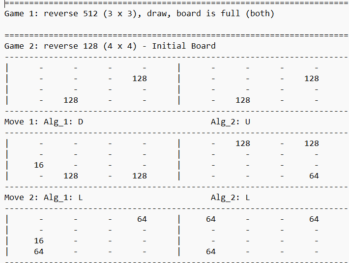
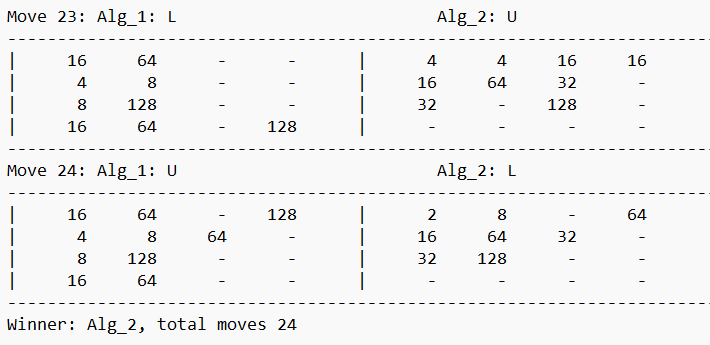
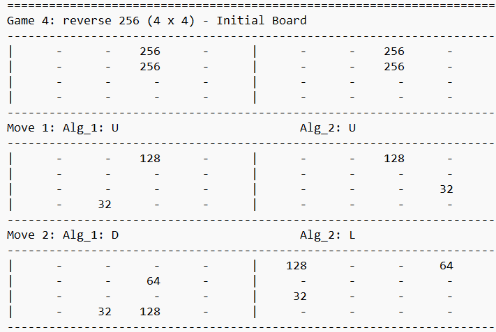

REVERSE 2048



This software project was done in Codeblocks using C++. The goal was to create two different AI algorthims that play a game of Reverse 2048 against each other that uses different modes and boards. The actual moves were visualised in text files. This was a group project. [C++ 2025]